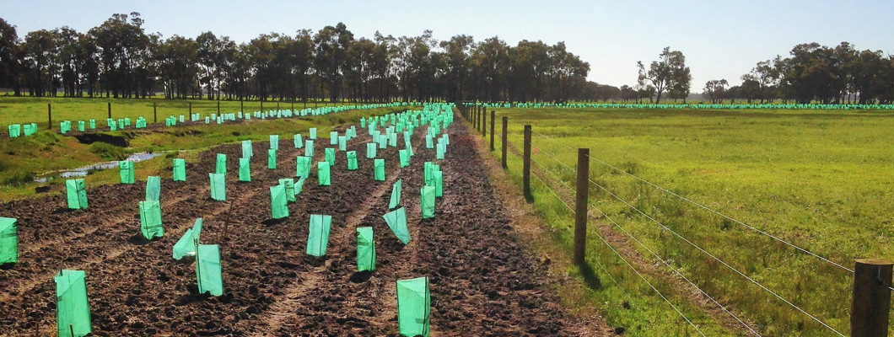

BioCollect - Home page for the TEST site
BioCollect - Home page for the TEST site
BioCollect Test Page
Advanced data collection for biodiversity projects
What is ‘BioCollect’?
BioCollect is a sophisticated, yet simple to use tool developed by the Atlas of Living Australia (ALA) in collaboration with over 100 organisations which are actively involved in field data capture. It has been developed to support the needs of scientists, ecologists, citizen scientists and natural resource managers in the field-collection and management of biodiversity, ecological and natural resource management (NRM) data. The tool is hosted by the ALA and is free for public use.
BioCollect provides form-based structured data collection for:
- ad-hoc survey-based records;
- method-based systematic structured surveys; and
- activity-based projects such as natural resource management intervention projects (eg. revegetation, site restoration, seed collection, weed and pest management, etc.).
It also supports upload of unstructured data in the form of data files, grey literature, images, sound bytes, videos, etc.
The system is fully integrated with other Atlas tools and we are currently working to enable seamless linkages with other global project finders, and other related national research infrastructure facilities such as the Terrestrial Ecosystem Research Network (TERN) and the Australian National Data Service (ANDS).
Development Progress
BioCollect is still a work in progress. The first release in December 2015 delivers support for citizen science projects in the form of a general project finder and, for organisations wanting to use BioCollect as their project database, the ability to create and manage surveys to collect, view and manage data, as well as to communicate information about the project to their project members and/or the general public. The system also provides organisation project portfolios which list, summarise, map, and provide access to, all of the projects which an organisation is associated with.
During 2016 we are also planning to provide:
- Support for systematic (ecological/research) and activity/works-based (NRM) projects;
- A ‘self-service’ form builder (in the interim, if you require different forms to the default set, please contact the ALA);
- Mobile apps;
- Web service APIs to enable integration with other systems and web sites as well as enabling development of bespoke mobile apps linked to hosted projects;
- Enhancements to data review and organisation pages; and
- Dashboard-style summaries of project data.

Enabling Citizen Science Projects
Supporting Scientific Research Data Collection
BioCollect for Ecological Science >
not yet available
Advancing Natural Resource Management
BioCollect for NRM >
not yet available
Organisation Project Portfolios
To find out more, please contact biocollect-support@ala.org.au
Enabling Citizen Science Projects

Citizen science projects generally aim to either invite public participation to perform mass processing of data which requires human interpretation, or they aim to collect large volumes of structured data which can then be analysed for patterns and meaning. In both cases, citizen science is increasingly becoming a significant and important contributor to the pool of data which is being used to advance scientific knowledge and the many benefits to humanity and the natural world which flow from it.
Since 2010 the Atlas of Living Australia has been working with more than 100 organisations across Australia, providing support to their citizen science activities. Through this we have gained a deep understanding of the citizen science landscape across all biodiversity-related domains and the issues which confront people organising projects, the public wanting to participate in projects, and scientists needing data in their research.
With the BioCollect tool the ALA is aiming to address many of the issues which can be resolved, or at least reduced, with technology. Whilst BioCollect as a product is still developing and is still short of our vision for it, we believe that this tool fills a very significant gap in capability to support the growing needs of both scientists wanting to engage the public in their research and the public wanting to participate in important scientific work, including collecting their own observation data.
The Atlas welcomes feedback and more collaborators.
Read more about how the Atlas of Living Australia is supporting Citizen Science and BioBlitzes …
Add your Citizen Science project >
Features & Benefits:
- Have your own project website to communicate your project to your stakeholders, including stories, achievements, outcomes and event information.
- Easily create and manage your own surveys
- Attach all kinds of supplementary materials to your project and choose to make them public or only for project members.
- Easily manage membership and user roles in your project.
- Flexible yet simple to use project and activity configuration options.
- Graphical user interface driven form builder enabling flexible data form design and data collection.
- Standards-based components ensures that data can aggregate.
- Avoid data loss and succession issues with a robust and persistent database.
- Seamless integration with the ALA.
- Automatic feeds of public data to other relevant systems.
- Mobile apps make your project accessible and portable.
- Review, manage and download your data.
- Real-time statistical summaries of your data.
- Organisation-based project discovery.
Supporting Scientific Research Data Collection

“Scientific research” projects are differentiated from other project types by the purpose of the project and the need to ensure that project metadata (ie. information about the project, the methodologies used, and the veracity and integrity of the data itself) is properly described to enable effective peer review and re-use of project materials. The “Ecological Science” project type would most typically be used by scientists collecting data for their own research projects or by ecologists and natural resource management (NRM) practitioners undertaking surveys for planning related development applications, long-term site monitoring projects, etc.
BioCollect supports the collection of comprehensive standards-compliant metadata as well as both structured data (form-based) and unstructured data (free text and attached materials) for research projects, method-based surveys, and long term site monitoring.
Linkages with TERN/AEKOS
The Terrestrial Ecosystem Research Network (TERN) is a ‘sister’ project of the Atlas of Living Australia (ALA) under Australia’s National Collaborative Research Infrastructure Strategy (NCRIS). TERN runs the AEKOS system which is the national aggregation repository for ecological data and SHaRED which is a dataset lodgement interface for AEKOS.
Automated data packaging and transfer protocols between the ALA and the SHaRED/AEKOS systems allows for “Ecological science” type project data and metadata to be recorded in BioCollect and automatically discoverable and accessible in AEKOS. In addition, species data collected via structured forms in BioCollect will automatically create DarwinCore compliant occurrence records in the Atlas of Living Australia, whilst providing all of the benefits of a robust project management/data collection tool for users. BioCollect does the processing work for you, eliminating the need to split up and lodge your survey data in multiple repositories.
These automated linkages will provide significant improvements and efficiencies in data processing and management and also ensures that valuable well documented datasets are available for scientific reuse.
Scientific Research data collection.
Target release: July 2016.
Features & Benefits:
- Single point of data lodgement automatically creates species occurrences in the ALA and passes project information and data to AEKOS.
- Have your own project website to communicate your project to your stakeholders, including stories, achievements, outcomes and event information.
- Easily create and manage your own surveys
- Attach all kinds of supplementary materials to your project.
- Easily manage membership and user roles in your project.
- Flexible yet simple to use project and survey configuration options.
- Ability to flexibly embargo datasets.
- Graphical user interface driven form builder enabling flexible data form design and data collection.
- Standards-based components ensures that data can aggregate.
- Avoid data loss and succession issues with a robust and persistent database.
- Seamless integration with the ALA.
- Automatic feeds of public data to other relevant systems.
- Mobile apps make your project accessible and portable.
- Review, manage and download your data.
- Real-time statistical summaries of your data.
- Organisation-based project discovery.
Advancing Natural Resource Management

Natural resource management (NRM) projects involve undertaking a sequence of activities to achieve a planned environmental management outcome. Many individual activities in these projects involve assessing, identifying, collecting from, planting, treating or monitoring plants and/or animals, thus producing species occurrence data. This biodiversity data and the context in which it occurred is very important to science, particularly when combined with other information.
BioCollect supports NRM projects by providing a project management framework for you to create, manage and record data for your schedule of project activities, including both biodiversity and non-biodiversity activities. For organisations which undertake environmental intervention projects, such as environmental NGOs (non-government organisations), NRM bodies, local government authorities, landcare and other community NRM groups, etc., BioCollect provides a robust and feature-rich tool in which they can manage their data recording and communicate their projects outputs and outcomes to their communities.
Standardised activities covering the full range of activity types facilitate data aggregation for efficient monitoring of achievements as well as enabling consistency and efficiency gains in all areas of data collection, management and analysis processes.
Natural Resource Management
data collection.
Target release: Sep 2016.
Features & Benefits:
- Have your own project website to communicate your project to your stakeholders, including stories, achievements, outcomes and event information.
- Easily create and manage your own project activity schedule.
- Attach all kinds of supplementary materials to your project.
- Easily manage membership and user roles in your project.
- Flexible yet simple to use project and activity configuration options.
- Standards-based components ensures that data can aggregate.
- Fully compatible with the MERIT system for Federal government funded projects.
- Avoid data loss and succession issues with a robust and persistent database.
- Seamless integration with the ALA.
- Automatic feeds of public data to other relevant systems.
- Mobile apps make your project accessible and portable.
- Review, manage and download your data.
- Real-time statistical summaries of your data.
- Organisation-based project discovery.
Project portfolios for organisations

Many organisations conduct a wide range of different kinds of projects and it is often difficult to obtain a clear real-time view across all projects. BioCollect supports the diverse range of project types that are undertaken and provides ‘one stop shop’ access to them, as well as aggregated views and statistical summaries of collected data and output measures.
Organisations associated with projects automatically have an organisation page which allows them to to view and access all organisation projects in BioCollect, including MERIT projects (required for Federal government funded projects) which they are associated with.
Features & Benefits:
- An organisation’s projects in a single list giving a comprehensive real-time view of the status and outputs from the project portfolio.
- All BioCollect and MERIT projects visible and accessible in one place.
- All projects for an organisation on one map.
- Combined searchable data from all projects.
- Dashboard summaries of organisation data.
- Associate multiple organisations with a project.
- Self-maintainable organisation page information.
- Independent URL and web service APIs allow organisations to directly link to their project list from, or embed it in, their own web sites.
Going mobile with BioCollect apps
The Atlas of Living Australia is developing Android and Apple iOS mobile apps to complement the BioCollect web interface and to support in-situ collection of data in the field.
These apps will provide the same functionality as the BioCollect website, but will also use device features such as the camera, microphone, GPS, etc. to improve usability and data recording efficiency in the field. The apps will also work in offline mode and will support pre-downloading of maps and taxonomy for when you are intending to work in an area with little or no internet connectivity.
A user configurable setting will allow data collected via the apps to be automatically transmitted to the database when the device has a phone or wireless internet connection.
Build your own mobile app for your project
Some organisations require specialised apps for particular projects. The BioCollect apps which will be published by the ALA are provided as free generic mobile apps and will not support specific configuration or “look & feel” requirements.
However, we will be including as part of the BioCollect software, a set of web service application interfaces (APIs) which will enable bespoke mobile apps to be developed for specific organisation, project, or survey requirements. These are also still to be developed, but we will publish their availability when they are ready. This will allow people to develop their bespoke app requirements independently, whilst using the BioCollect system as a database back-end for these apps.
BioCollect mobile apps.
Target release: mid-2016 (iOS)
The mobile apps have not yet been developed, but when they are they will be published in the app stores and accessible via this page.
apps not yet available
Features & Benefits:
- Android and Apple iOS versions.
- Record data offline.
- Automatic data upload to the BioCollect database.
- Access all of your projects from the one app.
- Integrated with device tools (GPS, camera, mic, etc.) for data recording.
- GPS-based search - projects near me or specified location.
- Web service application interfaces to the database enables specialised mobile apps for projects or surveys.